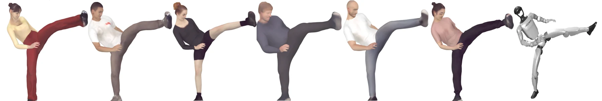
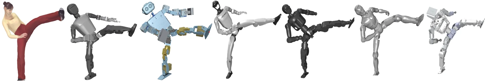
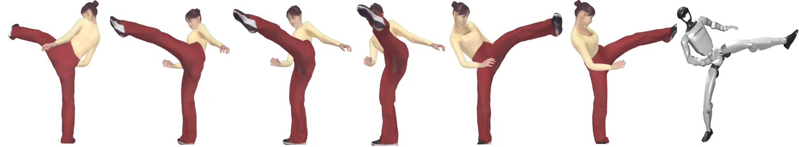
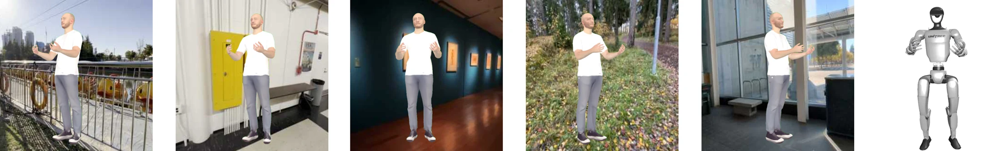
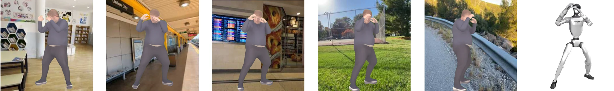
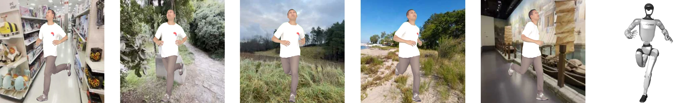

Visual realism
Implicit skinning reconstructs high-fidelity human surfaces across diverse body shapes, clothing, poses, and appearances.
01 · Motivation
Progress in visual imitation learning for humanoid robots is bottlenecked by data: motion capture offers precise motion without rich visual context, while in-the-wild video offers appearance diversity without kinematically admissible control signals.
H2O shifts the paradigm from passive collection to active synthesis. Its automated digital twin pipeline generates visually photorealistic, multimodal observations paired with kinematically compliant robot states, closing the gap between seeing human motion and executing it on heterogeneous humanoids.
Implicit skinning reconstructs high-fidelity human surfaces across diverse body shapes, clothing, poses, and appearances.
A canonical motion representation transfers human intent across robots with different proportions, chains, and degrees of freedom.
Constrained kinematic projection enforces joint, velocity, and hardware limits before control signals enter the dataset.
02 · Synthesis method
The rendering and control branches are coupled by cycle consistency, keeping the visual surface spatially aligned with the underlying robot skeleton.
03 · H2O-1B dataset
Every sample is designed as learning-ready supervision rather than an isolated visual frame.
Photorealistic appearance across subjects, clothing, lighting, and environments.
Dense geometry aligned pixel-for-pixel with the rendered observation.
Clean foreground supervision for segmentation and spatial grounding.
Control-ready states projected inside embodiment-specific constraints.
H2O-1B combines visual, geometric, and robot-control signals at a scale unavailable in existing collections.
| Dataset | Source | RGB | Depth | Robot joints | Kinematics |
|---|---|---|---|---|---|
| AMASS | Mocap | — | — | — | — |
| LocoMuJoCo | Mocap / Sim | — | — | ✓ | ✓ |
| Motion-X | In the wild | ✓ | — | — | N/A |
| PHUMA Video | Aggregated | ✓ | — | — | N/A |
| H2O-1B Ours | Synthetic | ✓ | ✓ | ✓ | ✓ |
04 · Multi-dimensional diversity
The method systematically varies appearance and morphology without breaking motion correspondence.
Varied anthropometrics, body shape, clothing style, and motion priors improve visual robustness.

The same intent is retargeted onto heterogeneous humanoids with distinct proportions and kinematic structures.

Monocular and multi-view observations cover a broad visual manifold for viewpoint-robust learning.

Domain randomization
Indoor, outdoor, transit, gallery, and natural scenes are varied alongside illumination and perspective to strengthen domain generalization.



05 · Evaluation
H2O improves whole-body and upper-body reconstruction while maintaining surface quality and volumetric overlap.
Kinematic validation
Real-world evaluation demonstrates that the projected trajectories remain transferable to hardware across expressive whole-body motions.
06 · Video demonstrations